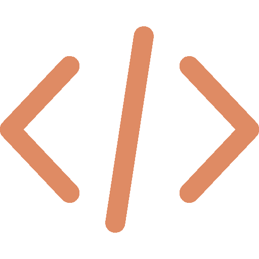

01 / Full stack · 2026
Budget Master
A personal budgeting application that makes the 50/30/20 rule actionable, with flexible categories, protected allocations, and saved budgets.
View project
Software EngineerPortrait photo
Projects
01 — 03
01 / Full stack · 2026
A personal budgeting application that makes the 50/30/20 rule actionable, with flexible categories, protected allocations, and saved budgets.
View project02 / Full stack · 2026
A weekly meal planner for organizing recipes, tracking nutrition, managing pantry inventory, and creating streamlined shopping lists.
View project03 / Senior design · 2021
A Lockheed Martin-sponsored team project that trained reinforcement-learning agents to compete in a strategic, capture-point battle simulation.
View projectA little about me
Hi! I'm Jace Mixon, and I am a Software Engineer that specializes in backend development, DevOps work, and cloud-native solutions. I primarily work within C#, SQL, Kubernetes, and Azure, while also experimenting with other tools in my projects, such as React, Spring Boot, MongoDB, Python, and Java. I also have spent my academic time learning machine learning algorithms and different use-cases of artificial intelligence, which naturally led to utilizing AI tools today such as Copilot and Claude code for a more efficient work space.
Besides coding, I remain curious and excited to not only learn of the emerging technologies within IT, but also to better learn the clients and business to tailor and enhance our solutions to their needs and produce the best outcomes possible. It all requires constant communication and networking, so feel free to connect with me if you like what you see! 😊
Professional experience
2022 — Present
Software Engineer
JM Family Enterprises · Deerfield Beach, FL
Modernized enterprise applications and deliver cloud-native, distributed systems while collaborating with product, architecture, security, and engineering teams.
Education
Aug 2021 — May 2022
University of Central Florida · Orlando, FL
GPA: 4.0Aug 2018 — May 2021
University of Central Florida · Orlando, FL
Summa Cum Laude · University Honors · GPA: 3.9Technical skills